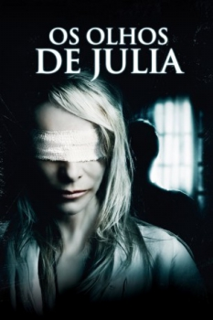

Os Olhos de Júlia (2010)


You can't hide in the dark

Avaliação (TMDb):


6.7/10 (560 votos)
Avaliação (Usuário):
Outro Título:Los ojos de Julia
País:Spain, 118 minutos
Idiomas falados:Espanhol
Gênero(s):Terror, Suspense
Diretor(s):Guillem Morales
Codec:MPEG-2 (DVD)
Número: 4300
Sinopse:
No longa, Julia é uma mulher que sofre de uma doença degenerativa nos olhos. Após encontrar sua irmã cega morta, ela decide investigar o acontecido, e descobre um mundo sombrio cheio de mistérios e mortes, enquanto sua visão começa a piorar.
Elenco:
Belén Rueda, Pablo Derqui, Joan Dalmau, Clara Segura, Lluís Homar, Francesc Orella, Julia Gutiérrez Caba, Daniel Grao, Òscar Foronda, Boris Ruiz
Tipo de mídia: DVD5,
Legendas: Inglês, Espanhol, Português,
Alugado: Não
Tela: 2.35:1